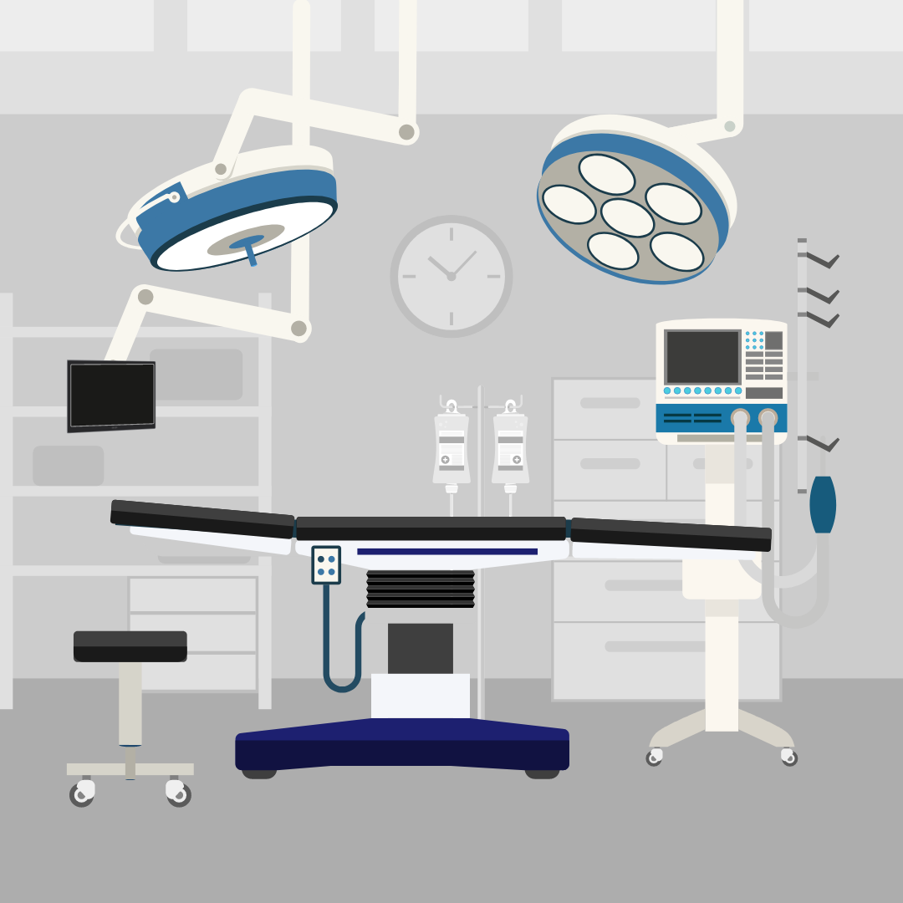

Conjunto de aparelhos e máquinas, suas partes e acessórios utilizados por um estabelecimento de saúde onde são desenvolvidas ações de diagnose, terapia e monitoramento. São considerados equipamentos de saúde os equipamentos de apoio, os de infraestrutura, os gerais e os médico assistenciais;
Equipamento ou sistema inclusive acessório e periférico que compõe uma unidade funcional, com características de apoio à área assistencial. São considerados equipamentos de apoio: cabine de segurança biológica, destilador, deionizador, liquidificador, batedeira, banho-maria, balanças, refrigerador, autoclave, dentre outros;

Equipamento ou sistema inclusive acessório e periférico que compõe as instalações elétrica, eletrônica, hidráulica, fluido-mecânica ou de climatização, de circulação vertical destinadas a dar suporte ao funcionamento adequado das unidades assistenciais e aos setores de apoio;

Equipamentos gerais: conjunto de móveis e utensílios com características de uso geral, e não específico, da área hospitalar. São considerados equipamentos gerais: mobiliário, máquinas de escritório, sistema de processamento de dados, sistema de telefonia, sistema de prevenção contra incêndio, dentre outros; Fonte (RDC nº509 de 27 de maio de 2021.)
Equipamento ou sistema, inclusive seus acessórios e partes, de uso ou aplicação médica, odontológica ou laboratorial, utilizado direta ou indiretamente para diagnóstico, terapia e monitoração na assistência à saúde da população, e que não utiliza meio farmacológico, imunológico ou metabólico para realizar sua principal função em seres humanos, podendo, entretanto, ser auxiliado em suas funções por tais meios.